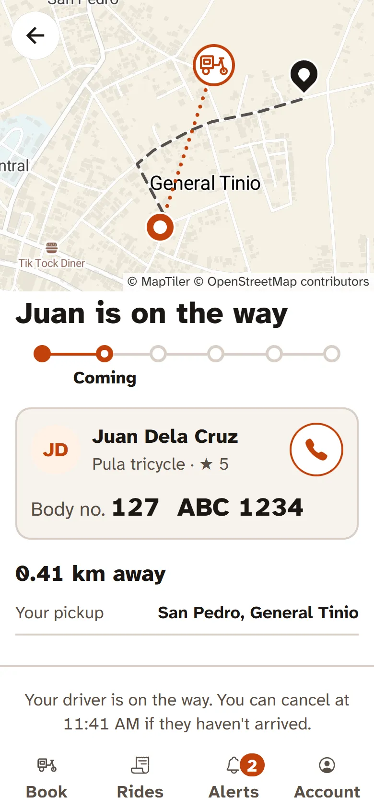
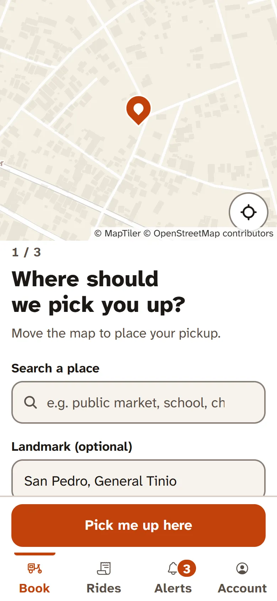
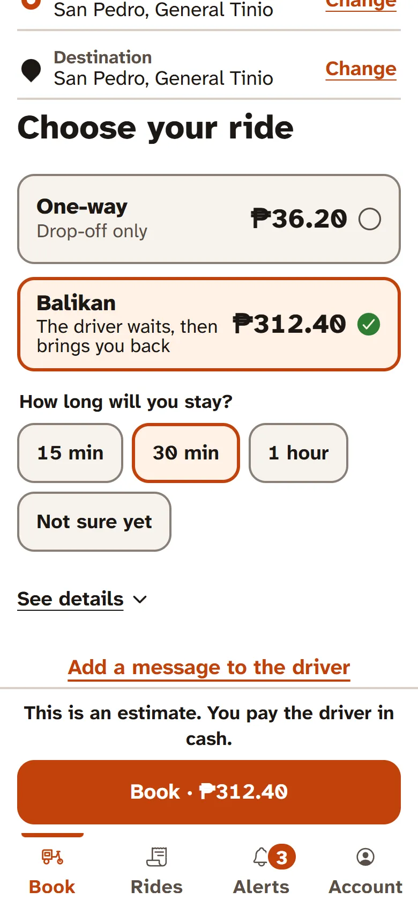
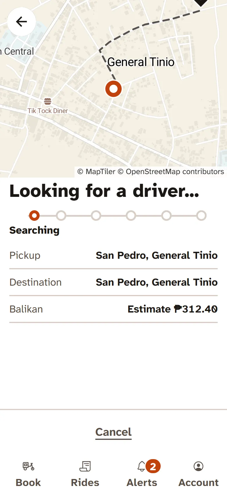
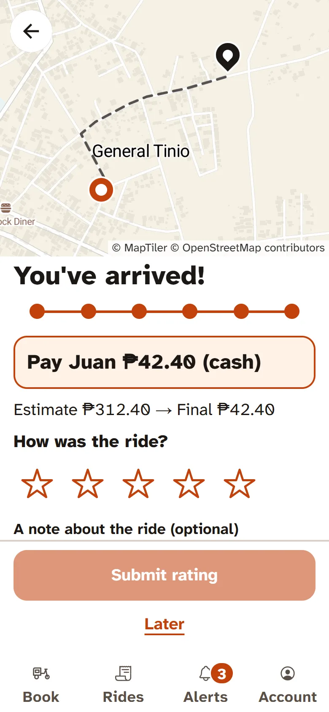
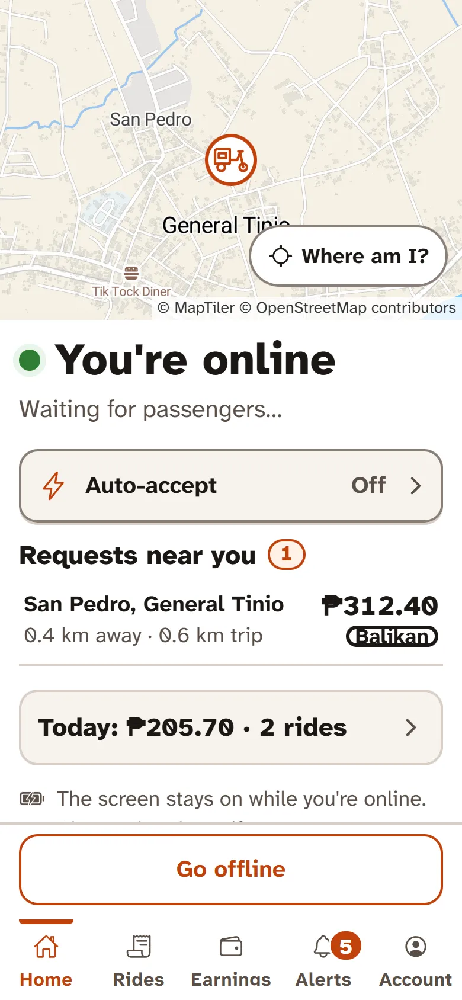
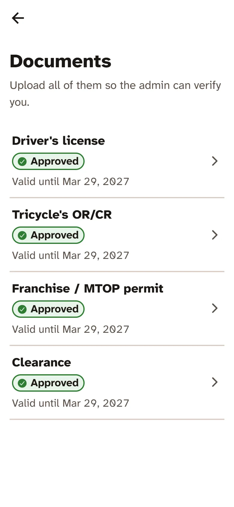
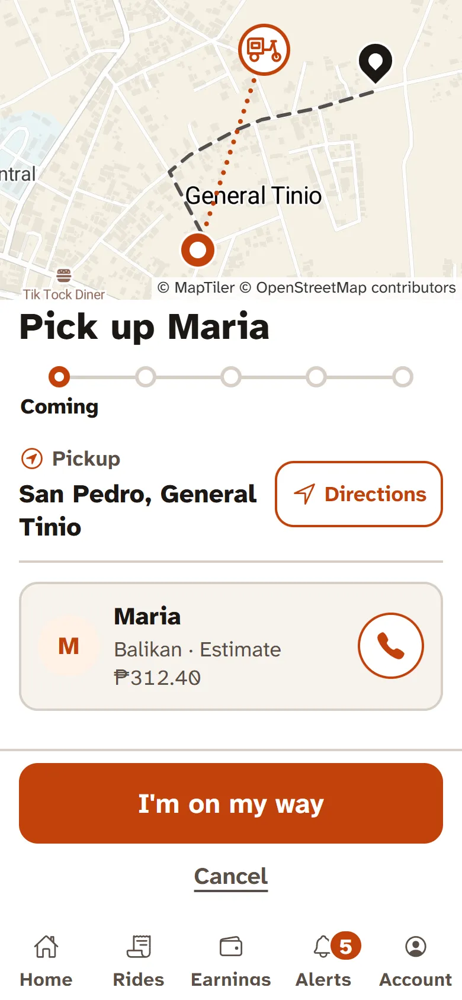

Your tricycle, booked from your phone.
Papaya HatidGo connects passengers in General Tinio, Nueva Ecija, with verified tricycle drivers nearby. See the fare before you ride, follow your driver on the map, and pay in cash or in the app.
- No subscription
- English or Taglish
- Seniors ride without the fee

A ride in four steps
The same trip you know, without waiting at the terminal or guessing the fare.
-

Set your pickup
The map starts where you are. Add a landmark like blue gate so the driver finds you.
-

See the fare
Pick One-way or Balikan (the driver waits and brings you back). The price shows before you book.
-

A driver accepts
You see their name, photo, body number and plate, and where they are. Call or chat in the app.
-

Pay and rate
Pay the driver in cash, or with GCash, Maya or a card in the app. Then rate the ride.
You pay only when you ride
No monthly plan. Each ride is the fare, which goes to the driver, plus a small service fee that keeps the app running.
- Rounded down. The total drops the centavos, so you never need coins.
- Your first 3 rides have no service fee.
- Senior citizens, PWD and students with an approved ID pay no service fee on their share.
- Invite friends: when someone you invited finishes their first ride, you earn points for free rides.
- Nothing to pay when you cancel early or no driver is found.
The fare follows the rates set by the Papaya HatidGo office, measured along the real roads.
Taripa
A one-way ride across town, as an example
| Fare (to the driver) | ₱52.20 |
|---|---|
| Service fee, 5% | ₱1.80 |
| You pay | ₱54 |
Senior, PWD or student riding alone: ₱52.20.
First 3 rides: ₱52.20.
For tricycle drivers
More passengers between terminal trips, and you keep almost all of every fare.
- No monthly fee. Papaya HatidGo takes 5% of a fare only when you finish a ride. Your first week is commission-free.
- You choose. See every request near you with its fare and distance, then accept or skip.
- Fair turns. When drivers are about equally near, the one who has waited longest gets the next request.
- Pay after you earn. Keep the cash; settle the fees at the office or in the app. Rides paid in the app become credit you can cash out to GCash or Maya.
| Rides this week | Commission |
|---|---|
| Up to 19 | 5% |
| 20 or more | 4% |
| 30 or more | 3% |
| 40 or more | 2% and a ₱50 bonus |
Commission also stops at ₱30 a day. A month at 4.8 stars lowers it by 1%. Senior and PWD shares carry no commission.



Know who is driving you
Every driver is checked by the Papaya HatidGo office before their first passenger.
- Papers checked. Driver's license, the tricycle's OR/CR, the franchise (MTOP) and a clearance, with their expiry dates.
- The right tricycle. You see the body number, plate and color before it arrives.
- Ratings that matter. Low ratings send a driver to an office review, with the reason the passenger gave.
- Report a problem from the ride itself; the office reviews every report.
Made for everyone in town
Large text, simple steps, and Taglish if you prefer it.
Seniors and PWD
Send a photo of your Senior Citizen or PWD ID once. After the office approves it, your share of every ride has no service fee, and the driver pays no commission on it. Show your ID to the driver at pickup.
Students
Send your school ID and proof of enrollment for the semester. Your share has no service fee. Riding as a group? Each rider shows their own ID to the driver.
No phone or no load?
A family member can book for you. At a tricycle already? Show the driver a QR code from a friend's app and ride at the same fare. The TODA terminal works as it always has.
Working with the TODA and the LGU
The app supports the terminal; it does not replace it.
- Franchised tricycles only. A driver's MTOP and papers must be approved before they can go online.
- The official fare. Rates follow the municipal fare matrix, and the legal Senior, PWD and student discount can be switched on once confirmed for tricycles.
- Reports for the office. Rides, drivers, users and earnings for any period, ready to print as a formal report.
- Privacy first. ID photos are seen only by the office and deleted after review; phone numbers show only during a ride.
Ride or drive with Papaya HatidGo
One app for passengers and drivers. Choose which one you are when you sign up.
Android 7.0 or newer. The manual shows how to install the app file, step by step, with a QR code to scan.Questions
Where does Papaya HatidGo work?
In General Tinio (Papaya), Nueva Ecija. The app tells you if a pickup or destination is outside the service area.
Why is there a service fee?
It pays for the server, the maps, permits and keeping the app improved. Instead of a monthly subscription, you pay a small part only when you ride, and new passengers, discount IDs and referral points make it free.
Can I book for someone else?
Yes. Enter the rider's name and number so the driver knows whom to pick up. A Senior, PWD or student discount follows the person riding, not the phone.
Is my payment safe in the app?
In-app payments go through Xendit, a licensed payment company. Papaya HatidGo never sees your card number or your GCash PIN, and never holds your money in its own account.
Is there an iPhone app?
Not yet. Papaya HatidGo is for Android phones for now.